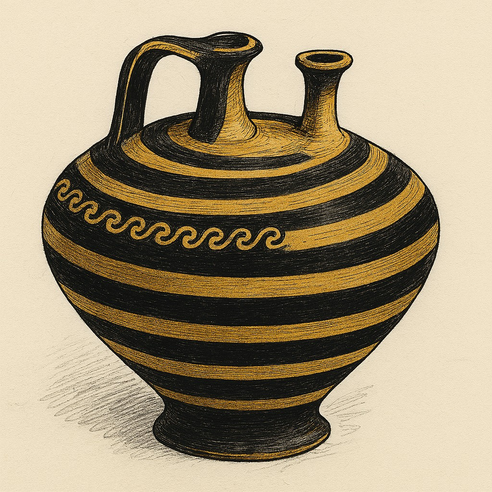
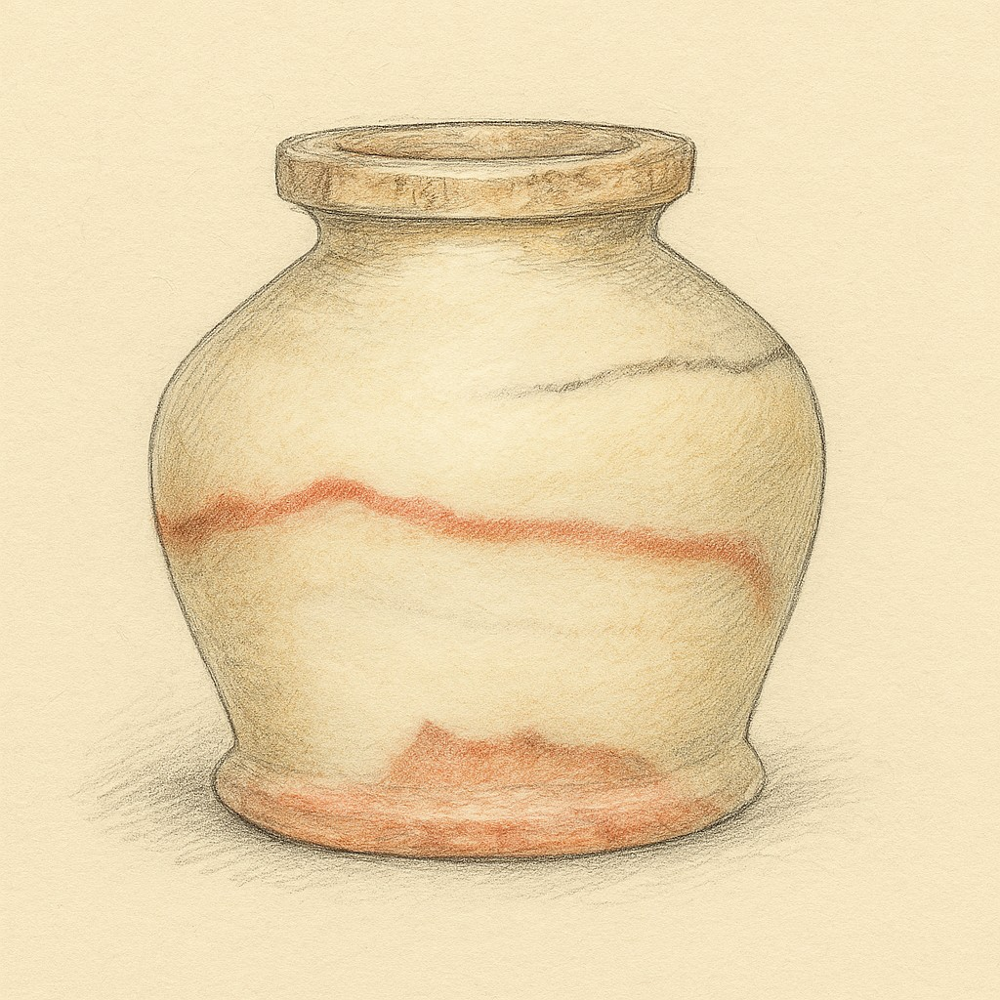
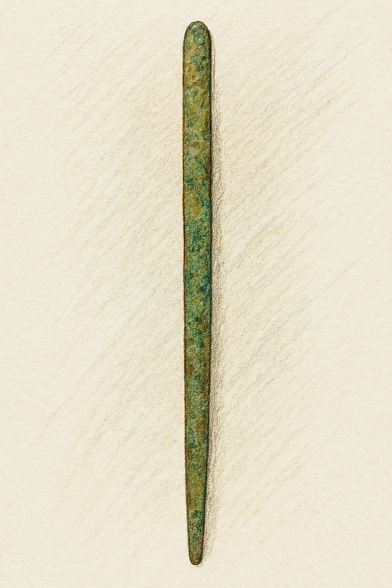

Ceremonial Vessel
Material: Crushed limestone and sand-tempered clay mixture.
Size/Weight/Shape: Approximately 30 cm tall and 20 cm wide, slender neck, rounded midsection. Weighs roughly 5-7 kg.
Preservation State: Slight erosion, primarily intact, erosion at rim and base, faded striping likely due to burial abrasion.
Location Found: Western banks of the Nile river in Egypt, unearthed near a necropolis, a probable burial site for nobility.
Likely Purpose: Used as a ritualistic container, stored scented oils or grains. Patterning implies ceremonial, not daily use.
Evidence of Use: Both olive oil and myrrh microscopic residue was detected. Abrasions on the exterior suggest frequent handling.
Manufacture Clues: Interior oil marks denote hand-made construction.
Found With: Faience beads and linen fabric fragments.
Burial or Habitat Context: Burial location below a sandstone table in a tomb chamber.Soil strata data denote a dry season.
Symbolism: Coloring contrast, black and sand color, symbolize life and death, sun and shadow.
Comparison: - Similar to Middle Kingdom vessels found in Thebes, but stylistic expressions similar to Lower Egyptian workshops. The stripe motif echo Mesa temple wall friezes.
Kohl Pot
Material: Alabaster, hand carved with metal tools, known for its durability.
Size/Weight/Shape: Approximate height 8 cm and 6 cm in diameter, weight 300 grams: rounded body, flat base, short neck.
Preservation State: Surface veining intact, minimal erosion suggesting low post depositional damage.
Location Found: Discovered near Saqqara necropolis, a private tomb.
Likely Purpose: Cosmetic container, used kohl for eyeliner and sun glare protection.
Evidence of Use: Microscopic evidence of palm oil, malachite and galena-kohl ingredients.
Manufacture Clues: Tool markings indicate hollowing with a hand-held drill.
Found With: Shell palette, bronze applicator stick and reed brush fragments.
Burial or Habitat Context: Discovered within a noble female burial chamber.
Symbolism: Kohl was believed to have magical protective power, the jar was valuable and represented status.
Comparison: Similar to vessels discovered in teh Theban tombs but higher lead content implies regional variation.
Bronze kohl applicator
Material: Made from bronze, a copper alloy, cosmetic tool in New Kingdom Egypt
Size/Weight/Shape: Likely less than 15 cm in length, elongated and slender with a tapered tip, cylindrical with flattened end for grip.
Preservation State: Appearance of surface corrosion, patina suggests long-term burial, fair condition with visible wear.
Location Found: Excavated from a tomb or domestic context given its cosmetic use.
Likely Purpose: Used to apply powdered galena, kohl, or other mineral based pigments for eye make-up.
Evidence of Use: Tip shows residue from use, evidence of microscopic traces of pigment.
Manufacture Clues: Hammered or cast bronze with hand-finishing.
Found With: Vessels, cosmetic palettes, and mirrors used in burial assemblages.
Burial or Habitat Context: Likely excavated from a tomb reflected in the importance of appearance in the afterlife.
Symbolism: Kohl application had aesthetic and spiritual value, warding off evil.
Comparison: This specimen is similar to other cosmetic tools from the New Kingdom.